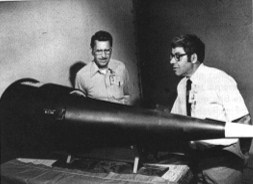

 Mk-12 RV mockup
The W62 is the warhead used with the Mk 12 reentry vehicle which arms a portion of the Minuteman III ICBM force. Designed for use on MIRV (multiple independently targeted reentry vehicle) bus upper stage.
| Yield | 170 Kilotons |
|---|---|
| Weight | Warhead/RV: 700-800 lb; Warhead: 253 lb |
| Length | RV Body: 72 in; Warhead: 39.3 in |
| Diameter | RV Body: 21 in; Warhead: 19.7 in |
| Number In Service | 580 (330 active, 250 inactive) |
Two stage radiation implosion weapon.
RV CEP (circle error probability) is 900 feet
Known to be vulnerable to "hot" (high energy thermal) X-rays like those produced by thermonuclear ABM warheads.
Contains plutonium as primary fissile material
Fissile core is beryllium reflected
Deuterium-tritium boosted
High explosive is LX-04
Probably contains lithium-6 (95% enrichment) deuteride fusion fuel
and enriched uranium in the secondary stage.
Minuteman III ICBM. Each missile carries up to three W62s, and is based in a hardened underground silo. About 150 missiles have one warhead, and another 50 have three warheads.
Dual key launch control.
Designed and developed by Lawrence Livermore National Laboratory (LLNL).
| June 1964 | Development engineering begun at LLNL |
|---|---|
| March 1967 | Production engineering begun |
| March 1970 | Quantity production begun |
| June 1976 | Quantity production ends |
| April 1980 | Retirement of early mods begun |
| October 2006 | Final retirement of remaining warheads begun |
| 2009 | Complete retirement planned |
Initial manufacture March 1970
Initial deployment 1970 (first squadron of Minuteman III missiles went operational on 29 December). Between December 1979 and February 1983 900 W62s were replaced by W78/Mk-12As. Retirement of early mods began in April 1980, presumably the retirement consisted of W62s that had been replaced by W78s. Some of the remaining W62s were modified in a program called Alt 903.
1725 W62 warheads were manufactured.
This warhead was originally slated for retirement and dismantling under START II. The 1995 Nuclear Policy Review reversed this and the W62 was redesignated for permanent retention. Under the 2002 Nuclear Posture Review this warhead was again set for permanent retirement. It is now scheduled for complete retirement from service in 2009 and will be completely dismantled.
Currently in service: 580 warheads (the rest have been permanently retired). At the start of the final retirement from service in October 2006 some 330 were being kept on active duty at any given time.
Replacement of deployed W62 warheads by W87 warheads from the now-retired Peacekeeper missile began in October 2006 and is currently proceeding at a rate of one missile per week. Completion of replacement is due in 2009.